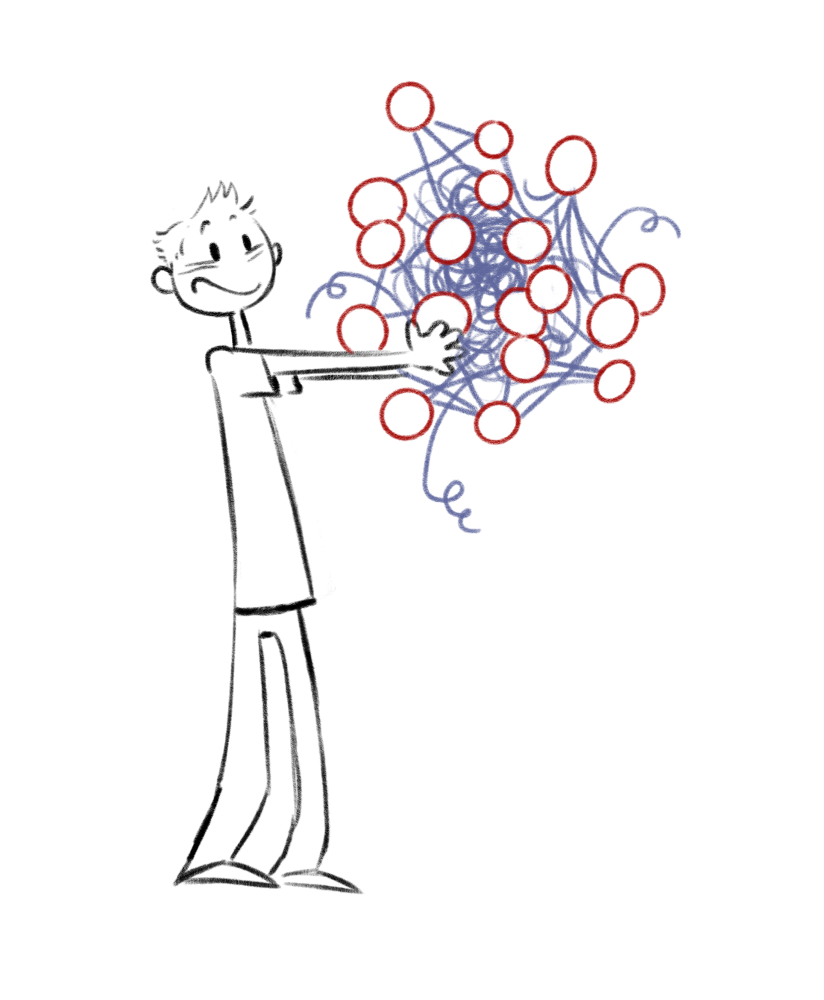
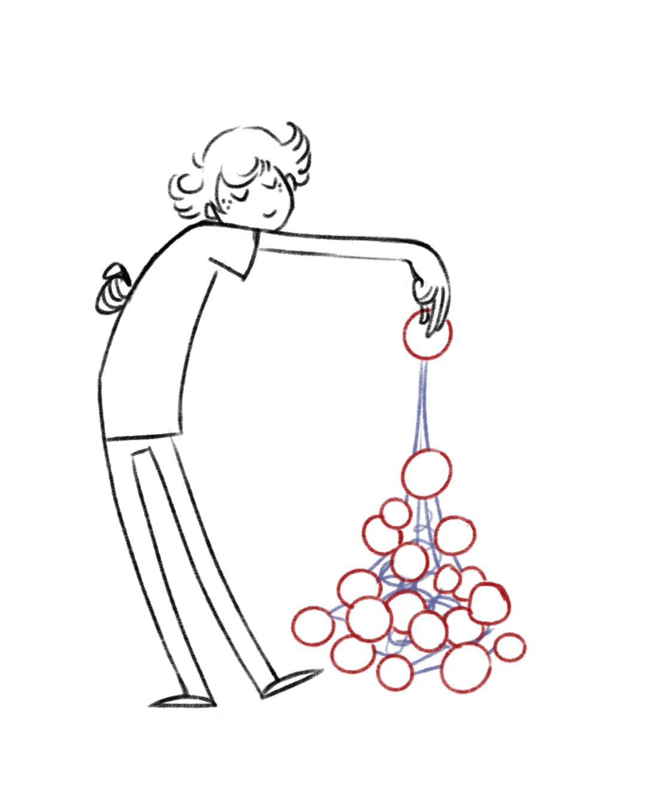

Package fr.cnrs.iees
omugi stands for "One More Ultimate Graph Implementation". There are many implementations of a graph as defined by graph theory. In search of one easy-to-use one, we reached the conclusion that (1) many libraries were too complex than what we were searching for and (2) a strict implementation of mathematical definitions was not enough, one also had to handle graphs being constructed / manipulated, i.e. objects that are not yet graphs but will be after some operations.
 A key problem in graph implementations is: who is responsible for node or edge creation and deletion? If this is decided at graph level, then for example you cannot pick a node in one graph to put it in another because inbetween, it belongs to no graph and this is impossible by construction. If it's decided at node/edge level, then you are never sure of how many nodes/edges are present in a given graph. Typically, a good graph implementation should allow manipulation at both levels, i.e. the whole graph and its nodes or edges. (cf. Gignoux et al. 2017, for a discussion of issues related to this question).
The idea is to keep this library as lightweight as possible while still retaining the
possibility to expand it with better implementations of the base interfaces found in
fr.cnrs.iees.graph (hence the absence of graph visualisation tools here - there are so many
around).
illustrations: © Emile Gignoux
- Author:
- Jacques Gignoux - 16 août 2021
-
Class SummaryClassDescriptionA class to return the appropriate class loader when classes (e.g.
-
Exception Summary